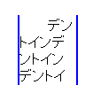

印刷時には改ページされた直後の行（各ページの先頭行）が、ボックス内の最初の行でない場合でもtext-indentプロパティの指定に従ってインデントされる。
<p style="text-indent:2em; width:4em; border:2px solid blue;">インデント……</p>
検証ページには上の記述があります。検証ページを開き、印刷プレビュー画面に切り替えて、2ページ目の先頭がインデントされているかを確認してください。
印刷プレビューで見た2ページ目の先頭部分です。
Moz1.2.1での表示
Moz1.0.2での表示
Moz1.0.2では標準・互換モードの両方で不具合の発生が確認されました。Moz1.2.1ではでは標準・互換モードの両方でこの不具合は発生しません。